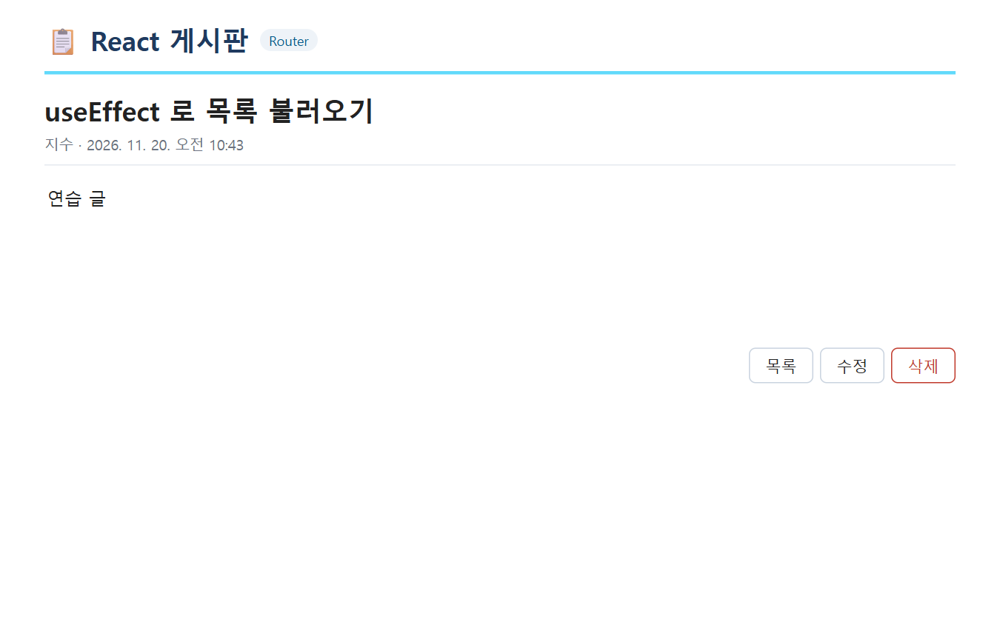

7장. 프로젝트 ① 게시판을 Router 로 바꾸기
학습 목표
- 기초 게시판의 state 화면 전환을 React Router 로 바꾼다.
- 서버 통신 코드를
api.js모듈로 모으고,ApiError로 상태 코드를 전달한다. useApi커스텀 훅으로 화면 코드의 반복을 없앤다.- 바꾸기 전과 후를 비교해 무엇이 좋아졌는지 설명한다.
7-1. 바꿀 것
백엔드(Spring Boot)와 DB 는 기초 과정 것을 그대로 쓴다. 바뀌는 것은 React 쪽뿐이다.
| 기초 게시판 | 이 장의 게시판 | |
|---|---|---|
| 화면 전환 | App 의 page state |
주소 + <Routes> |
| 화면 파일 | components/PostList.jsx 등 |
pages/PostListPage.jsx 등 |
| 서버 통신 | 화면마다 fetch + 오류 검사 |
api.js 의 함수 (getPosts() ...) |
| 불러오기 코드 | 화면마다 state 3개 + useEffect | useApi(() => getPost(id), [id]) 한 줄 |
| 화면 이동 | 부모가 내려준 onSelect, onBack ... |
<Link to>, navigate() |
| 주소 | 화면 |
|---|---|
/ |
PostListPage (목록) |
/posts/new |
PostFormPage (글쓰기) |
/posts/:id |
PostDetailPage (읽기) |
/posts/:id/edit |
PostFormPage (수정) |
| 그 밖 | NotFoundPage |
7-2. 준비
기초 과정의 DB 와 API 서버를 켠다 (기초 교안 9-13).
[PS] DB
cd C:\study\board
docker compose up -d # 기초 게시판 DB 켜기 (뒤에서 켜고 프롬프트를 돌려준다). 서버는 IntelliJ 에서 BoardApplication ▶
API 서버는 IntelliJ 로 C:\study\board\backend 를 열고 BoardApplication 을 ▶ 실행한다. http://localhost:8080/docs 가 열리면 준비 끝.
기초 과정 폴더(
C:\study\board)가 없다면 저장소의basic\board폴더를C:\study\board로 복사한 뒤 기초 교안 9-3 처럼 IntelliJ 로 backend 를 열면 된다.
새 React 프로젝트는 기초 게시판 프런트엔드를 복사해서 시작한다. (원래 것은 비교용으로 남겨 둔다.)
[PS] 터미널 3
# 기초 완성본 React 를 frontend-router 라는 새 폴더로 복사해서 고친다 (원본은 그대로 두어 비교할 수 있게)
Copy-Item -Recurse C:\study\react-spring-postgresql\basic\board\frontend C:\study\board\frontend-router
cd C:\study\board\frontend-router
npm install # 복사한 폴더에도 라이브러리가 필요하다 (node_modules 는 복사되지 않았거나 깨졌을 수 있다)
npm install react-router # 이번 장에서 새로 쓰는 라이브러리
그다음 폴더를 정리한다.
src/components/PostList.jsx,PostDetail.jsx,PostForm.jsx를 지운다. (pages 로 새로 만든다)src/config.js를 지운다. (주소는api.js로, 날짜 함수는format.js로 옮긴다)src/pages,src/hooks폴더를 만든다.
완성본은 저장소의 advanced/board-router/frontend 다.
7-3. api.js - 서버 통신을 한 곳에
// api.js - 서버와 주고받는 코드를 한 파일에 모은 "API 모듈"
//
// 기초 과정에서는 화면 컴포넌트마다 fetch(...) 와 오류 검사를 직접 썼다.
// 이 파일로 모으면 좋은 점
// - 화면 코드에는 getPosts(), createPost(form) 처럼 "무엇을" 만 남고 "어떻게" 는 사라진다.
// - 주소·헤더·오류 처리를 고칠 때 이 파일만 고치면 된다.
// (9장에서 로그인 토큰을 붙일 때도 request 함수 한 곳만 고친다)
export const API_URL = "http://localhost:8080/api";
// 서버가 실패 상태 코드(400, 404 ...)를 돌려줬을 때 던질 오류.
// status 를 함께 담아 두면 화면에서 "404 면 이렇게" 처럼 나눠 처리할 수 있다.
export class ApiError extends Error {
constructor(status, message) {
super(message);
this.status = status;
}
}
// 모든 요청이 거쳐 가는 함수
// path : "/posts" 처럼 API_URL 뒤에 붙을 주소
// options : { method, body } - body 에는 객체를 넣으면 JSON 으로 바꿔 보낸다
export async function request(path, { method = "GET", body } = {}) {
let res;
try {
res = await fetch(API_URL + path, {
method,
headers: body ? { "Content-Type": "application/json" } : {},
body: body ? JSON.stringify(body) : undefined,
});
} catch {
// 서버가 꺼져 있거나 주소가 틀리면 응답 자체가 없다
throw new ApiError(0, "API 서버에 연결할 수 없습니다. 서버가 켜져 있나요?");
}
if (res.status === 204) return null; // 204 No Content: 돌려줄 내용 없음 (삭제 성공)
const data = await res.json().catch(() => null); // 본문이 JSON 이 아니면 null
if (!res.ok) {
// 우리 Spring Boot 서버는 오류 이유를 { "detail": "..." } 로 보낸다 (GlobalExceptionHandler)
const message = typeof data?.detail === "string" ? data.detail : `요청 실패 (${res.status})`;
throw new ApiError(res.status, message);
}
return data;
}
// ---------------------------------------------------------------- 게시글 API
export const getPosts = () => request("/posts");
export const getPost = (id) => request(`/posts/${id}`);
export const createPost = (post) => request("/posts", { method: "POST", body: post });
export const updatePost = (id, post) => request(`/posts/${id}`, { method: "PUT", body: post });
export const deletePost = (id) => request(`/posts/${id}`, { method: "DELETE" });
- 모든 요청이
request한 함수를 거친다. 연결 실패, 204, 오류 메시지 꺼내기가 여기서 한 번에 처리된다. ApiError는Error를 확장(extends)해 상태 코드(status) 를 함께 담는다. 화면에서err.status === 404처럼 나눠 처리할 수 있다.- 9장에서 로그인 토큰을 붙일 때도
request한 곳만 고치면 모든 요청에 붙는다.
날짜 함수는 따로 둔다.
// format.js - 화면 표시용 작은 함수
// "2026-11-20T10:30:00+09:00" → "2026. 11. 20. 오전 10:30"
export function formatDate(text) {
return new Date(text).toLocaleString("ko-KR", {
year: "numeric",
month: "2-digit",
day: "2-digit",
hour: "2-digit",
minute: "2-digit",
});
}
7-4. useApi - 불러오기 훅
3장 useFetch 는 주소(url)를 받았다. 이번에는 api.js 함수를 쓰기 위해 불러오는 함수를 받는다.
// useApi.js - "불러오기 + 로딩 + 오류" 를 묶은 커스텀 훅 (3장 useFetch 의 게시판판)
//
// 3장 useFetch(url) 와 다른 점
// - 주소 대신 "불러오는 함수" 를 받는다 → api.js 의 getPosts, getPost(id) 를 그대로 쓸 수 있다.
// const { data, loading, error } = useApi(() => getPost(id), [id]);
// - deps(의존성 배열)를 함께 받아, 그 값이 바뀌면 다시 불러온다.
// (함수는 그릴 때마다 새로 만들어지므로 함수 자체를 의존성으로 쓰면 무한 반복된다)
import { useEffect, useState } from "react";
export function useApi(loader, deps) {
const [data, setData] = useState(null);
const [loading, setLoading] = useState(true);
const [error, setError] = useState(null);
useEffect(() => {
let ignore = false; // 늦게 도착한 지난 요청의 결과는 버린다
setLoading(true);
setError(null);
loader()
.then((result) => !ignore && setData(result))
.catch((err) => !ignore && setError(err)) // err 는 ApiError (status, message)
.finally(() => !ignore && setLoading(false));
return () => {
ignore = true;
};
// 의존성 배열은 부르는 쪽이 정해서 넘긴다 (deps)
}, deps);
return { data, loading, error };
}
const { data: posts, loading, error } = useApi(getPosts, []); // 목록: 처음 한 번
const { data: post, loading, error } = useApi(() => getPost(id), [id]); // 글 하나: id 가 바뀔 때마다
7-5. main.jsx 와 App.jsx - 주소 지도
// main.jsx - 앱의 시작점
// 기초 과정과 달라진 점: <BrowserRouter> 로 감싸 Router 기능을 켰다 (4장).
import { StrictMode } from "react";
import { createRoot } from "react-dom/client";
import { BrowserRouter } from "react-router";
import "./index.css";
import App from "./App.jsx";
// index.html 의 <div id="root"> 를 찾아 그 안에 React 앱을 그린다
createRoot(document.getElementById("root")).render(
// StrictMode: 개발 중에만 실수(부작용 등)를 더 잘 찾도록 검사를 켠다. 화면에는 아무것도 그리지 않는다
<StrictMode>
{/* BrowserRouter: 브라우저 주소창과 React 를 이어 준다. 이 안쪽에서만 Route·Link·useNavigate 를 쓸 수 있다 */}
<BrowserRouter>
<App />
</BrowserRouter>
</StrictMode>,
);
// App.jsx - 게시판의 "주소 → 화면" 지도 (7장: 기초 게시판을 Router 로 바꾸기)
//
// 기초 과정 App.jsx 와 비교
// 기초: const [page, setPage] = useState({ name: "list" }) → 주소는 항상 "/"
// 심화: 주소 자체가 지금 화면을 나타낸다
//
// 주소 화면 기초 과정의 page state
// / PostListPage { name: "list" }
// /posts/new PostFormPage { name: "form" }
// /posts/3 PostDetailPage { name: "detail", id: 3 }
// /posts/3/edit PostFormPage { name: "form", id: 3 }
// 그 밖 NotFoundPage (없었음)
//
// → 화면 전환 함수(goList, goDetail ...)를 props 로 내려줄 필요가 없어졌다.
// 각 화면이 <Link> 나 navigate() 로 직접 주소를 바꾼다.
import { Route, Routes } from "react-router";
import Layout from "./components/Layout";
import PostListPage from "./pages/PostListPage";
import PostDetailPage from "./pages/PostDetailPage";
import PostFormPage from "./pages/PostFormPage";
import NotFoundPage from "./pages/NotFoundPage";
import "./App.css";
function App() {
return (
<Routes>
<Route element={<Layout />}>
{/* path 없는 Route = 주소에는 영향 없이 "틀(Layout)" 만 씌운다 */}
<Route path="/" element={<PostListPage />} />
<Route path="/posts/new" element={<PostFormPage />} /> {/* /posts/:id 보다 구체적인 주소가 우선 */}
<Route path="/posts/:id" element={<PostDetailPage />} />
<Route path="/posts/:id/edit" element={<PostFormPage />} />
<Route path="*" element={<NotFoundPage />} />
</Route>
</Routes>
);
}
export default App;
/posts/new와/posts/:id는 둘 다/posts/무엇모양이다. React Router 는 순서와 상관없이 더 구체적인 주소(글자로 정해진new)를 먼저 고르므로,/posts/new가id="new"로 잘못 잡히지 않는다.
// Layout.jsx - 모든 화면이 함께 쓰는 머리글 + 본문 자리(Outlet)
// 기초 과정 App.jsx 의 <header> 부분이 여기로 옮겨 왔다.
// 제목을 누르면 목록으로: onClick={goList} 대신 <Link to="/">
import { Link, Outlet } from "react-router";
function Layout() {
return (
<div className="container">
<header className="header">
<Link to="/" className="logo">
📋 React 게시판
</Link>
<span className="badge">Router</span>
</header>
<Outlet />
</div>
);
}
export default Layout;
7-6. 화면(pages) 만들기
목록 - PostListPage
// PostListPage.jsx - 글 목록 ( / )
//
// 기초 과정 PostList.jsx 와 비교
// - useState 3개 + useEffect + fetch + try/catch → useApi(getPosts, []) 한 줄
// - onSelect(id) 버튼 → <Link to={`/posts/${id}`}> (진짜 주소가 생겼다)
// - onWrite 버튼 → <Link to="/posts/new">
import { Link } from "react-router";
import { getPosts } from "../api";
import { useApi } from "../hooks/useApi";
import { formatDate } from "../format";
function PostListPage() {
// useApi: 불러오기·로딩·오류 상태를 한 번에 돌려주는 사용자 정의 Hook (3장). [] = 처음 한 번만 불러온다
const { data: posts, loading, error } = useApi(getPosts, []);
// 불러오는 중·오류면 여기서 먼저 끝낸다 → 아래에서는 posts 가 항상 있다
if (loading) return <p className="info">⏳ 불러오는 중...</p>;
if (error) return <p className="error">⚠️ {error.message}</p>;
return (
<div>
<div className="toolbar">
<span>전체 {posts.length}개</span>
{/* 버튼 대신 Link: 글쓰기 화면에도 /posts/new 라는 진짜 주소가 생겼다 */}
<Link to="/posts/new" className="button primary">
✏️ 글쓰기
</Link>
</div>
{posts.length === 0 ? (
<p className="info">아직 글이 없습니다. 첫 글을 써 보세요!</p>
) : (
<table className="post-table">
<thead>
<tr>
<th className="col-id">번호</th>
<th>제목</th>
<th className="col-writer">작성자</th>
<th className="col-date">작성일</th>
</tr>
</thead>
<tbody>
{/* 글마다 한 줄. key 는 React 가 줄을 구분하는 이름표 */}
{posts.map((post) => (
<tr key={post.id}>
<td className="col-id">{post.id}</td>
<td>
{/* 제목을 누르면 /posts/번호 로 → App.jsx 의 Route 가 상세 화면을 그린다 */}
<Link to={`/posts/${post.id}`}>{post.title}</Link>
</td>
<td className="col-writer">{post.writer}</td>
<td className="col-date">{formatDate(post.created_at)}</td>
</tr>
))}
</tbody>
</table>
)}
</div>
);
}
export default PostListPage;
읽기·삭제 - PostDetailPage
// PostDetailPage.jsx - 글 읽기 ( /posts/:id )
//
// 기초 과정 PostDetail.jsx 와 비교
// - 글 번호를 props(id) 가 아니라 주소에서 꺼낸다: useParams()
// - 삭제 후 목록으로: onDeleted() → navigate("/")
// - 이제 /posts/3 주소를 새로 고침해도, 복사해서 보내도 같은 글이 열린다.
import { Link, useNavigate, useParams } from "react-router";
import { deletePost, getPost } from "../api";
import { useApi } from "../hooks/useApi";
import { formatDate } from "../format";
function PostDetailPage() {
const { id } = useParams(); // "/posts/3" → id = "3" (문자열)
const navigate = useNavigate();
const { data: post, loading, error } = useApi(() => getPost(id), [id]);
const handleDelete = async () => {
if (!confirm("정말 삭제할까요? 되돌릴 수 없습니다.")) return;
try {
await deletePost(id);
navigate("/"); // 목록으로 이동
} catch (err) {
alert(err.message);
}
};
if (loading) return <p className="info">⏳ 불러오는 중...</p>;
if (error)
return (
<div>
<p className="error">⚠️ {error.status === 404 ? "글을 찾을 수 없습니다." : error.message}</p>
<Link to="/">목록으로</Link>
</div>
);
return (
<article className="post-detail">
<h2>{post.title}</h2>
<div className="meta">
{post.writer} · {formatDate(post.created_at)}
{post.updated_at !== post.created_at && ` · 수정 ${formatDate(post.updated_at)}`}
</div>
<div className="content">{post.content || "(내용 없음)"}</div>
<div className="buttons">
<Link to="/" className="button">
목록
</Link>
<Link to={`/posts/${post.id}/edit`} className="button">
수정
</Link>
<button className="danger" onClick={handleDelete}>
삭제
</button>
</div>
</article>
);
}
export default PostDetailPage;
글쓰기·수정 - PostFormPage
// PostFormPage.jsx - 글쓰기 ( /posts/new ) · 수정 ( /posts/:id/edit )
//
// 기초 과정 PostForm.jsx 와 비교
// - 수정인지 아닌지를 주소로 판단: useParams() 에 id 가 있으면 수정
// - 저장 성공 → navigate(`/posts/${새 번호}`)
// - 취소 → navigate(-1) (바로 전 화면으로. 기초에서는 어디서 왔는지 직접 따져야 했다)
// - fetch 코드는 api.js 의 createPost / updatePost 로 바뀌었다.
import { useEffect, useState } from "react";
import { useNavigate, useParams } from "react-router";
import { createPost, getPost, updatePost } from "../api";
const EMPTY = { title: "", writer: "", content: "" };
function PostFormPage() {
const { id } = useParams(); // /posts/new 에서는 undefined
const isEdit = id !== undefined;
const navigate = useNavigate();
const [form, setForm] = useState(EMPTY);
const [saving, setSaving] = useState(false);
const [error, setError] = useState(null);
useEffect(() => {
if (!isEdit) return;
getPost(id)
.then((post) => setForm({ title: post.title, writer: post.writer, content: post.content }))
.catch((err) => setError(err.message));
}, [id, isEdit]);
const handleChange = (e) => setForm({ ...form, [e.target.name]: e.target.value });
const handleSubmit = async (e) => {
e.preventDefault();
if (!form.title.trim() || !form.writer.trim()) {
setError("제목과 작성자를 입력하세요.");
return;
}
setSaving(true);
try {
const saved = isEdit ? await updatePost(id, form) : await createPost(form);
// replace: true → 방금 본 글쓰기 화면을 방문 기록에서 바꿔치기한다.
// 그래서 저장 후 "뒤로" 를 눌러도 다시 글쓰기 화면으로 돌아가지 않는다.
navigate(`/posts/${saved.id}`, { replace: true });
} catch (err) {
setError(err.message);
setSaving(false);
}
};
return (
<form className="post-form" onSubmit={handleSubmit}>
<h2>{isEdit ? `${id}번 글 수정` : "새 글 쓰기"}</h2>
{error && <p className="error">⚠️ {error}</p>}
<label>
제목
<input name="title" value={form.title} onChange={handleChange} maxLength={100} />
</label>
<label>
작성자
<input name="writer" value={form.writer} onChange={handleChange} maxLength={30} />
</label>
<label>
내용
<textarea name="content" value={form.content} onChange={handleChange} rows={8} />
</label>
<div className="buttons">
<button type="button" onClick={() => navigate(-1)}>
취소
</button>
<button type="submit" className="primary" disabled={saving}>
{saving ? "저장 중..." : "저장"}
</button>
</div>
</form>
);
}
export default PostFormPage;
404 - NotFoundPage
// NotFoundPage.jsx - 없는 주소 ( path="*" )
// App.jsx 의 <Route path="*"> 에 연결된다. * 는 "위의 어떤 주소에도 맞지 않으면" 이라는 뜻.
// /abc 처럼 없는 주소로 들어오면 빈 화면 대신 이 안내를 보여 준다.
import { Link } from "react-router";
function NotFoundPage() {
return (
<div className="info">
<h2>404 - 없는 페이지입니다</h2>
{/* <a href> 대신 <Link>: 페이지를 새로 받지 않고 React 안에서 주소만 바꾼다 (4장) */}
<Link to="/">목록으로 가기</Link>
</div>
);
}
export default NotFoundPage;
7-7. 스타일 보충
<Link> 는 <a> 태그로 그려지므로, 버튼처럼 보이게 하려면 a.button 스타일이 필요하다. 기초 게시판 App.css 에서 다음 부분을 고친다. (완성본 advanced/board-router/frontend/src/App.css 참고)
/* 제목 글자 링크 (Layout 의 <Link className="logo">) */
.logo {
font-size: 24px;
font-weight: bold;
color: #1f3a5f;
text-decoration: none;
}
/* 목록 표 안의 제목 링크 */
.post-table a {
color: #1f3a5f;
text-decoration: none;
}
/* 버튼 규칙에 a.button 을 함께 적는다 */
button,
a.button {
display: inline-block;
/* ... 원래 button 규칙 ... */
color: #222;
text-decoration: none;
}
button.primary,
a.button.primary {
border-color: #03588c;
background: #03588c;
color: white;
}
7-8. 확인하기
npm run dev 후 http://localhost:5173 에서 다음을 확인한다. (교안을 만들 때 브라우저 자동 시험으로 모두 확인한 항목이다.)
| 해 보기 | 기대 결과 |
|---|---|
| 글 제목 클릭 | 주소가 /posts/2 처럼 바뀐다 |
| 글 화면에서 F5 | 같은 글이 그대로 보인다 |
| 수정 → 저장 | /posts/2/edit → /posts/2. 이때 뒤로 가기를 누르면 수정 화면(/edit)으로 돌아가지 않는다. 수정 전에 보던 같은 글 화면이 한 번 더 나오고, 한 번 더 누르면 목록이다 (replace: true 가 수정 화면 기록을 바꿔치기했기 때문) |
| 글쓰기 → 저장 | 새 글 번호 주소로 이동 |
| 삭제 | 목록(/)으로 이동 |
주소창에 /posts/999 |
"글을 찾을 수 없습니다." |
주소창에 /nothing |
404 화면 |

정리
- 화면 전환 state 를 없애고 주소가 화면을 정하게 했다. 새로 고침·뒤로 가기·주소 공유가 된다.
- 서버 통신은
api.js한 곳에. 화면은getPosts()처럼 "무엇을" 만 부른다. - 반복되던 불러오기 코드는
useApi훅 한 줄로. - 부모가 화면 전환 함수를 내려줄 필요가 없어져 컴포넌트가 서로 덜 묶였다.
확인 문제
- 기초 게시판의
goDetail(id)는 Router 버전에서 무엇으로 바뀌었는가? 두 가지 방법을 쓰시오. useApi(() => getPost(id), [id])에서[id]를[]로 바꾸면 어떤 문제가 생기는지 설명하시오. (힌트: 글 화면에서 다른 글로 바로 이동하는 링크가 있다면)- api.js 에
searchPosts(q)를 추가한다면 어떻게 쓰겠는가? (서버가/api/posts?q=검색어를 받는다고 가정) - PostDetailPage 에서 404 일 때와 서버가 꺼졌을 때 보이는 문구가 다르다. 각각 어디서 정해지는지 쓰시오.